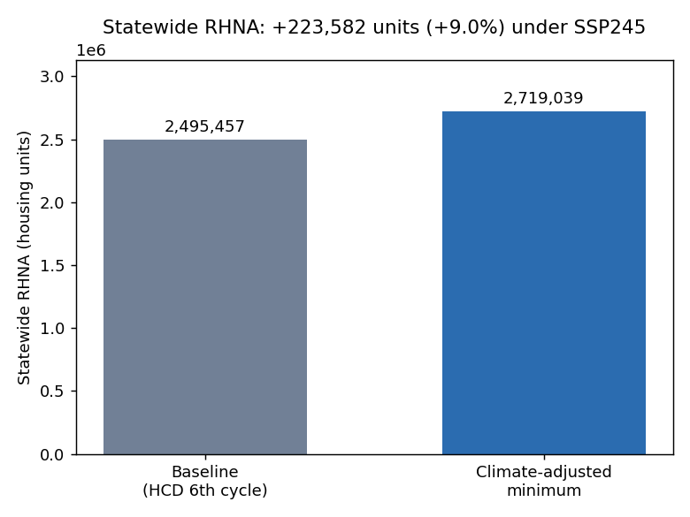
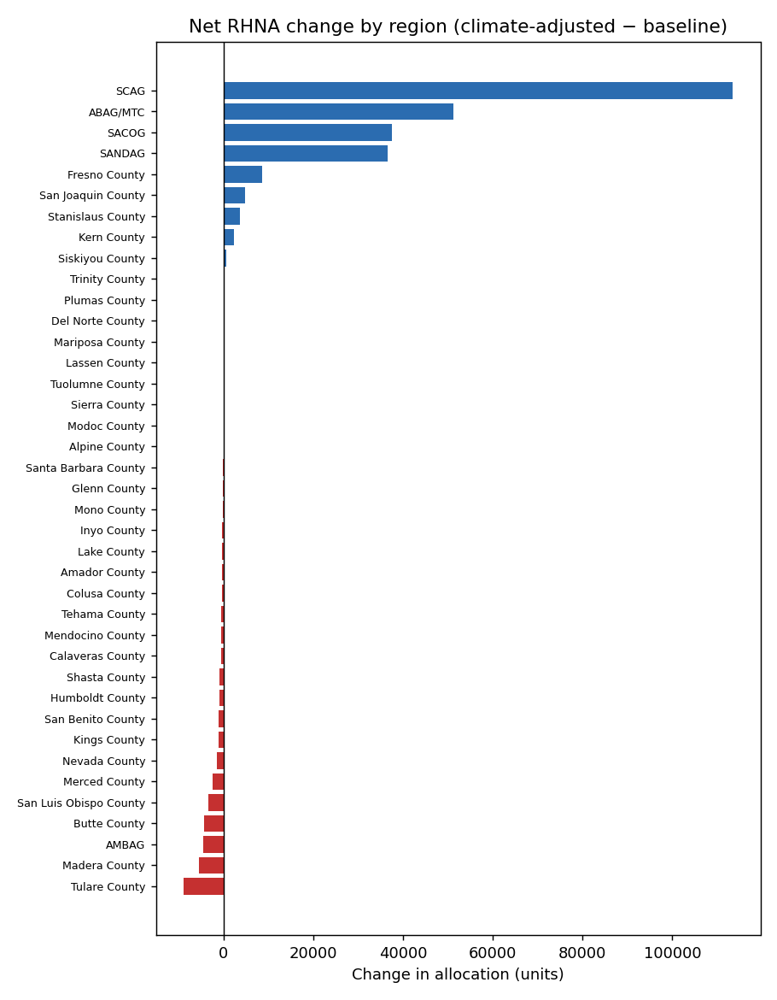
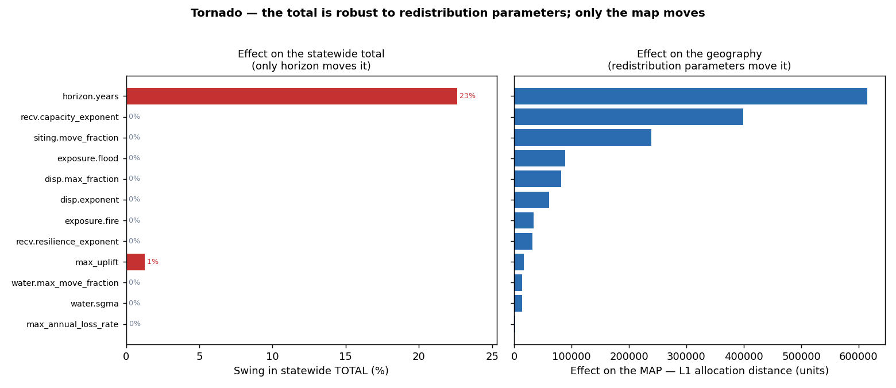
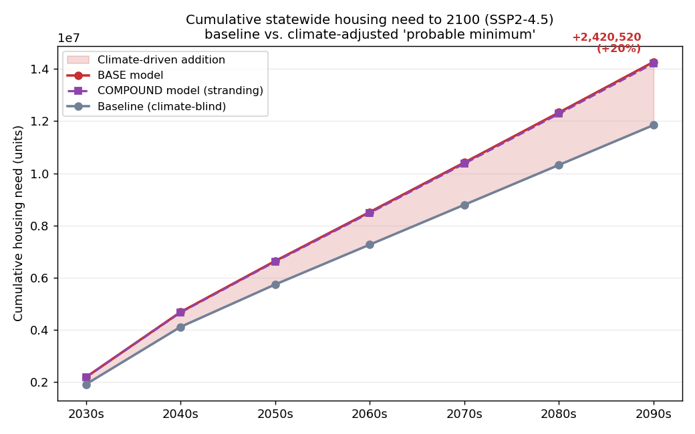
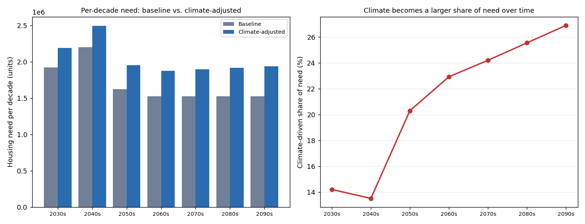
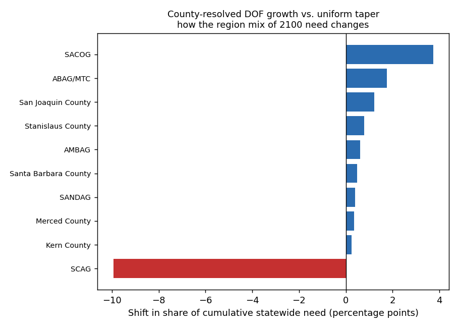
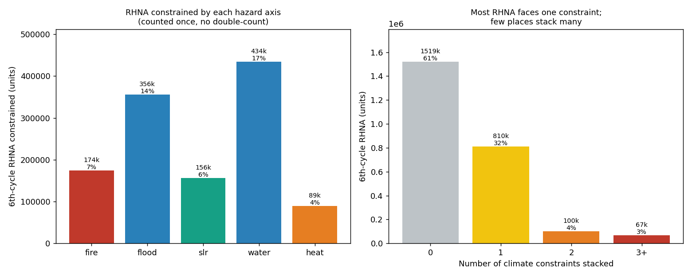
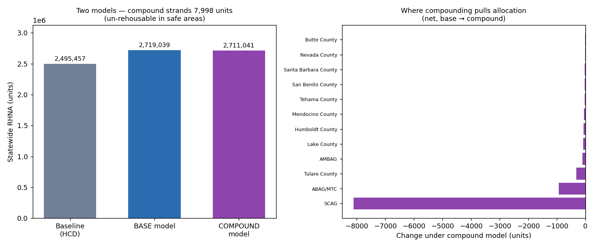

The gapClimate is invisible to the housing formula
California’s Regional Housing Needs Allocation (RHNA) sets, for each region and then each city and county, how many housing units to plan for over an ~8-year cycle. The Department of Housing and Community Development (HCD) builds it from Department of Finance projections plus adjustments for overcrowding, cost burden, vacancy, and replacement need.1
None of those inputs account for climate change. Housing lost to wildfire, flood, and sea-level rise, and the population displaced by those hazards, does not enter the formula. As the state directs growth toward some of its most fire- and flood-exposed inland areas, that omission matters more each cycle. This project asks one question: if you layer physical climate risk onto the existing baseline, how does the probable-minimum allocation change, in total and in shape?
The modelRaise the total, then redistribute it
Starting from each jurisdiction’s 6th-cycle baseline B_j, five
components act on the allocation. One raises the statewide
total (replacement need current RHNA omits); the rest redistribute
allocation away from hazardous, water-constrained places toward climate-resilient
receivers.
| Component | Effect | Built from |
|---|---|---|
A. Replacement R_j | raises total | FEMA NRI building expected-annual-loss ÷ building value × LOCA2 CMIP6 uplift × horizon23 |
B. Out-displacement D_j | redistributes | hazard exposure index E_j → displaced households (convex curve) |
| C. Receiver capture | redistributes | pool → resilient, higher-capacity, water-secure jurisdictions |
D. Siting discount S_j | redistributes | very-high fire/flood tract share of B_j moved out |
E. Water-siting Sw_j | redistributes | SGMA overdraft + drought + aridification share moved out4 |
The redistributed pool nets to zero (Σ received = Σ removed), so the
statewide total rises only by replacement need. The pipeline
asserts that identity at runtime and in the test suite. Water and displacement
move the map, never the total.
Result · 6th cycleA +9% replacement floor
Applied to the 2021–2029 baseline, replacement need adds 223,582 units, a +9.0% floor the current determination leaves out. The baseline reconciles exactly to the published 2,495,457 statewide total, and the regional rollup matches the published SCAG, ABAG/MTC, SANDAG, and AMBAG determinations, which validates the join.

Underneath that total, ~626k units shift between jurisdictions. Allocation flows out of high-hazard Inland Empire cities (Unincorporated Riverside −21k, then Irvine, Ontario, Riverside, Fontana) and into resilient high-capacity cores: Los Angeles (+30k), San Francisco (+28k), Sacramento, and San Diego. At the regional scale the large metros gain most, because they both absorb replacement need and receive displaced capacity.

RobustnessThe total is robust; the map is not
The model has about 30 parameters. The question worth answering is which ones the result actually depends on. A one-at-a-time tornado varies each fixed parameter across a plausible range and records its effect on the statewide total and its effect on the geography (the L1 distance of the per-jurisdiction allocation from the central case).

move_fraction) leaves the total unchanged and moves only the
map.That split is why the two headline outputs carry different confidence. The +9% total depends on the data-grounded cycle length and FEMA loss rates. The author-judgment parameters (blend weights and exponents) act only on the geography, which is why the per-jurisdiction and per-region shifts are framed as directional. The reported band comes from a joint sweep of the horizon and displacement parameters: +9.0% (8-year) to +33.6% (30-year).
Where each parameter comes from
Every parameter is tagged by the strength of its source. This table is the confidence story.
| Tier | Parameters | Basis |
|---|---|---|
| Data-grounded | baseline B_j, building-loss rates, LOCA2 CMIP6 signals, SLR, SGMA priority, county growth, household size, cycle length |
HCD, FEMA NRI, LOCA2/cadcat, NOAA/OPC, DWR, DOF, Census1256 |
| Literature-anchored | displacement ceiling and convex shape | McConnell et al. 2024; Hauer et al. 201678 |
| Author judgment | exposure/water/heat blend weights, receiver and siting exponents, move_fraction, normalization constants |
Conservative, but not externally sourced. Swept above; they move only the map. |
To 2100Climate becomes an ever-larger share of need
Run the model decade by decade to 2100, with a growing baseline resolved from county-level DOF household and population projections6 and climate intensification rising over time. The cumulative climate-driven addition is ~2.4M units (+20%) over the climate-blind path.

The finding that matters here is the timing. DOF projects California to plateau in the mid-2040s, and as demographic growth tapers, climate replacement and sea-level displacement become a growing share of why the state has to keep building. That climate share of need rises from ~14% in the 2030s to ~27% by the 2090s. The addition holds at ~2.3–2.6M across every demographic path tested, because housing stock and hazard drive it, not the growth assumption.

Resolving growth to real counties also moves the map of future need: out of slow-growing coastal Southern California (SCAG −10 pp of the statewide share) and into Sacramento, the Bay Area, and the Central Valley. An earlier uniform-taper assumption could not see that shift.

Compound riskWhere hazards stack
A separate reporting layer asks a different question: what share of RHNA sits somewhere hard to build, and where do hazards stack? Five axes (fire, flood, sea-level rise, water, and chronic heat) are each counted once. Heat enters only through a habitability index, never the acute heat-wave term already inside exposure, so nothing is double-counted.

~39% of statewide RHNA carries at least one high climate constraint; ~7% stacks two or more. The compound view shows what no single hazard does: the Inland Empire and Coachella Valley are where stacking concentrates. They are a growth destination and among the hardest places to build safely at the same time.
Compounding as a second model
Whether stacked hazards compound, that is, whether being moderately bad on several axes is worse than the sum, is an open question. So it runs as a separate second model, never merged into the headline. Stacked places shed an extra increment, applied only to the capacity that survives the per-axis discounts, so it is a marginal term and does not double-count. Some of that capacity cannot be rehoused in safe, water-secure, heat-livable areas. That part is stranded and drops out of the total, pulling the compound minimum slightly below the base.

Confidence and limitsWhat to trust, and what not to
- The +9% total is the solid number. It comes from FEMA building expected-annual-loss rates (a real fractional loss of building stock, not a made-up figure), the reconciled HCD baseline, and CMIP6 intensification.
- The geography is directional. Who loses and who receives the ~626k redistributed units depends on author-judgment blend weights and exponents. The pattern (out of stacked-hazard inland areas, into resilient cores) holds up; the exact per-jurisdiction counts do not.
- Water under-counts imported supply. The water index is groundwater-based. It does not capture Colorado River or State Water Project reliability, so it treats coastal metros as more water-secure receivers than they may be. The part to trust is the siting discount out of overdrafted basins; the receiver side is deliberately softened.
- Replacement is assigned in place. The model does not decide whether to rebuild elsewhere (that would be a managed-retreat extension), and out-of-state climate migration is off by default.
- Late-century decades are illustrative, not point forecasts. DOF projections end at 2070, and compounding uncertainty grows over time.
DataSources and reproduction
All inputs are public, vendored with provenance, and the pipeline runs end-to-end from raw data:
- Baseline: HCD 6th-cycle RHNA determination (data.ca.gov).
- Hazard and loss: FEMA National Risk Index v1.20 (tract building EAL + hazard percentiles).
- Climate: LOCA2-downscaled CMIP6 (Scripps/UCSD, 5th Assessment), read from the cadcat catalog behind the Cal-Adapt Analytics Engine on the 3-km
d03grid. 5-GCM ensemble (ACCESS-CM2, EC-Earth3, GFDL-ESM4, MIROC6, MRI-ESM2-0), SSP2-4.5. Sea-level rise from NOAA/Sweet 2022, scenario naming per California OPC 2024 guidance. - Demographics: DOF P-2A population and P-4 household projections, county-resolved.
- Water: DWR SGMA basin prioritization / critical-overdraft designations.
python -m venv .venv && ./.venv/bin/pip install -r requirements.txt ./.venv/bin/python -m src.source_rhna # normalize HCD baseline → FIPS ./.venv/bin/python -m src.allocate # 6th-cycle pipeline → outputs/ + charts ./.venv/bin/python -m src.trajectory # decadal need to 2100 ./.venv/bin/python -m src.constraints # compound climate-constraint view ./.venv/bin/python -m src.sensitivity # uncertainty bands + tornado ./.venv/bin/python -m pytest -q # 23 invariant tests
ReferencesCitations
- California Department of Housing and Community Development. Regional Housing Needs Determination, 6th Cycle. State of California Open Data (data.ca.gov).
- Federal Emergency Management Agency. National Risk Index for Natural Hazards, v1.20.0. Expected Annual Loss (building) and hazard risk percentiles by census tract. hazards.fema.gov/nri.
- Climate projections: LOCA2 statistically-downscaled
CMIP6 (Pierce, D. W., and D. R. Cayan; Scripps Institution of Oceanography,
UC San Diego), for California’s Fifth Climate Change Assessment. Five GCMs
(ACCESS-CM2, EC-Earth3, GFDL-ESM4, MIROC6, MRI-ESM2-0; r1i1p1f1), SSP2-4.5,
3-km
d03California grid. Accessed via the Cal-Adapt Analytics Enginecadcatcatalog on AWS Open Data (s3://cadcat/loca2, us-west-2), retrieved 2026-07-06 from analytics.cal-adapt.org. Methods: Pierce, D. W., D. R. Cayan, D. R. Feldman, & M. D. Risser (2023). “Future Increases in North American Extreme Precipitation in CMIP6 Downscaled with LOCA.” Journal of Hydrometeorology 24(5), 951–975. doi:10.1175/JHM-D-22-0194.1. Underlying models: CMIP6 (Eyring et al. 2016; scenario SSP2-4.5, O’Neill et al. 2016). - California Department of Water Resources. Sustainable Groundwater Management Act (SGMA) Basin Prioritization and Critically-Overdrafted Basins designations.
- Sweet, W. V., Hamlington, B. D., Kopp, R. E., et al. (2022). Global and Regional Sea Level Rise Scenarios for the United States. NOAA Technical Report NOS 01. Applied via California Ocean Protection Council (2024) State Sea-Level Rise Guidance.
- California Department of Finance. Population Projections (P-2A) and Housing / Household Projections (P-4), by county.
- McConnell, K., Fussell, E., DeWaard, J., Whitaker, S., Curtis, K. J., St. Denis, L., Balch, J., & Price, K. (2024). “Rare and highly destructive wildfires drive human migration in the U.S.” Nature Communications 15, 6631. doi:10.1038/s41467-024-50630-4. The 2018 Camp Fire drove 68–83 additional out-migrants per thousand residents in year one; the vast majority of destructive fires drove minimal migration, which anchors the model’s convex displacement curve.
- Hauer, M. E., Evans, J. M., & Mishra, D. R. (2016). “Millions projected to be at risk from sea-level rise in the continental United States.” Nature Climate Change 6, 691–695. doi:10.1038/nclimate2961. Anchors the scale of sea-level-rise displacement.